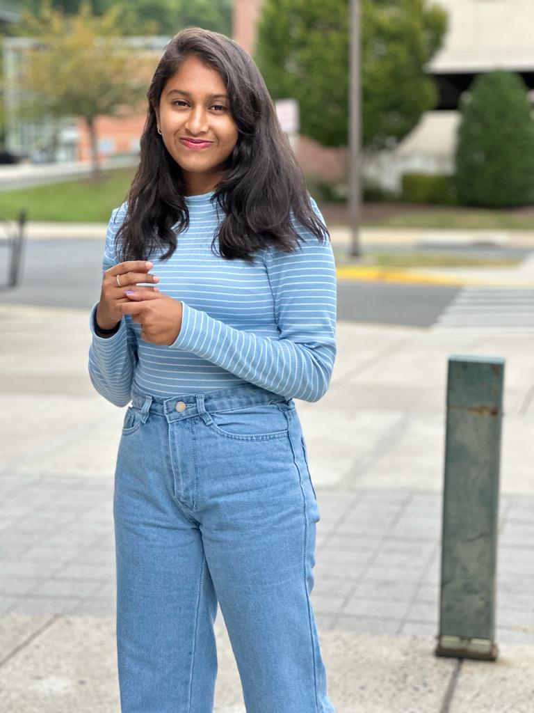

THANMAYI RAJENDRA

Summary
As a Frontend Developer at Gowri Software Solutions Pvt Ltd, I created user-friendly and responsive web applications using HTML5, CSS, and JavaScript. I have a master's degree in computer science from George Mason University, and a bachelor's degree in computer science from Gopalan College of Engineering & Management. I have one month of work experience in the IT industry, where I have contributed to the development of several web projects for various clients. I have strong skills in web design, UI/UX, debugging, and testing, and I enjoy learning new technologies and frameworks. My core competencies include creativity, problem-solving, teamwork, and communication. I am passionate about developing innovative and accessible web solutions that enhance user experience and satisfaction.
Education
Master of Science, Computer Science - George Mason University (August 2023 - May 2025)
Work Experience
Software Intern - GOWRI Software Solutions
(September 2021-March 2022)
- Designed front-end code using HTML, CSS, Javascript, jQuery to create a responsive web application that works across multiple devices (mobile, desktop)
- Involved in routine updates, maintenance, bugs and patches for the website.
- Developed multiple single pages for the web application.
Skills
- Programming Languages- Java, C, C++, Python
- Web Technologies- HTML5, CSS, JavaScript
- Database- MySQL
Certifications
- Complete front end web development - Udemy
Academic Projects
- Maze Game (OpenGL, C++ language)
- Developed a game using C++ and OpenGL
- Conceptualized and designed an interactive MAZE Game, showcasing working knowledge of
OpenGL and graphics programming.
- Applied translation, scaling, and other graphical transformations to enhance user experience and
gameplay
- Car Rental System (HTML, CSS, Javascript, PHP and MySQL)
- Designed an interactive user interface that allows customers to browse available cars,
view detailed car information including features and overview, and make online reservations.
- Developed a booking module that enables users to provide booking dates and
relevant information, optimizing the booking process for both customers and administrators.
- mplemented a profile management system that empowers users to update their profiles and passwords conveniently through the website
- Skin Lesion Segmentation (Python)
- Developed a skin lesion segmentation method for dermoscopic images, combining U-Net architecture with a VGG-16 encoder.
- Used semantic segmentation to accurately identify and segment skin lesions in medical images, aiding diagnostic imaging systems in evaluating lesion features for classification.
- Conducted experiments on ISIC dataset, a widely used dermoscopic image dataset, to train and evaluate the performance of the proposed segmentation method.
Other